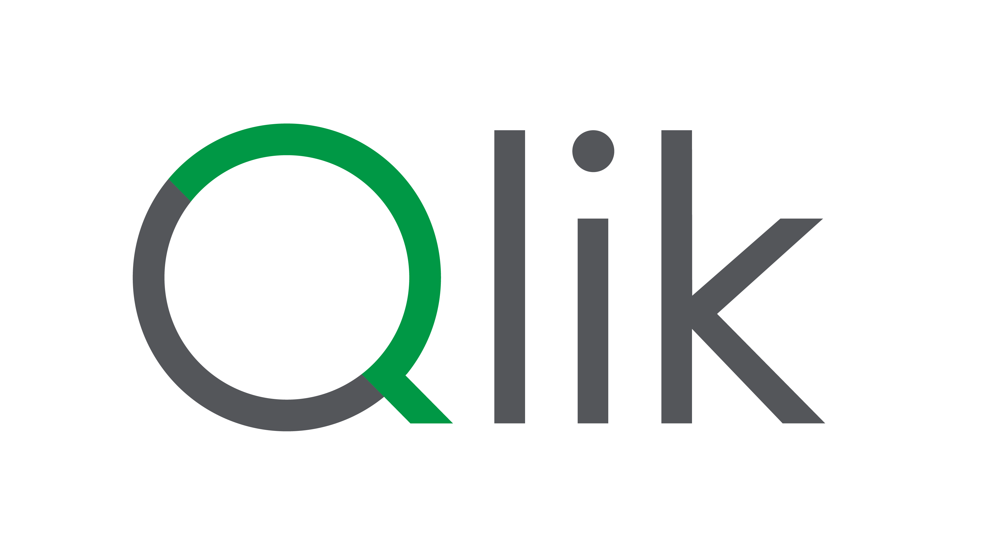

Qlik SalesAI
Disclaimer: SalesAI is an artificial intelligence (AI) tool and there
is a possibility that its output may be inaccurate and/or
confidential. You may not share the output of this tool externally
until you have verified that the output is accurate and
non-confidential by checking the cited references.